Page 1 / 原始页码 373
第 19 章 基因技术
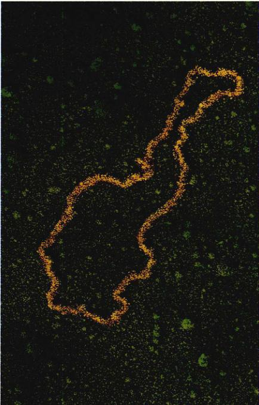
图 19.1 一个著名的质粒 这张电子显微照片中的环状分子是 pSC101，即第一个被成功用来克隆脊椎动物基因的质粒。它的名字源自它是 (Stanley Cohen) 斯坦利·科恩分离出的第 101 个质粒。
过去的几十年里，在研究和操作 DNA 方面，新的强大技术的发展造成了遗传学的革命（图 19.1）。这些技术使生物学家们第一次可以直接地干预生物体的遗传命运。在这一章里，我们将探讨这些技术，考虑它们如何应用到那些具有重大实践价值的特殊问题上。在生物学中，像这样对我们未来生活有着如此巨大影响的领域并不多。
Page 2 / 原始页码 374
19.1 操作 DNA 的能力产生了一门全新的遗传学
19.1.1 限制性内切酶
在1980年，遗传学家使用了一种比较新颖的基因剪接 (splice) 技术（这种技术将在本章加以描述），把编码干扰素 (interferon) 的人类基因引入到一个细菌细胞的基因组里。干扰素是一种特殊的血液蛋白，它能够增强人类对病毒感染的抵抗力，医药科学家们对它在癌症治疗上发挥的作用很有兴趣。然而，由于干扰素在血液中很少，临床实验所需要的大量提纯干扰素非常昂贵，因此，在1980年以前很难进行研究。必须有一种廉价的生产干扰素方法，而把产生干扰素的基因引入到细菌细胞能使之成为可能。获得了人类干扰素基因的细菌胞持续快速地产生干扰素，同时生长，分裂，不久培养基中就产生了数以百万计产生干扰素的细菌，所有这些细菌都是最初获得人类干扰素基因的细菌胞后代。
1) 基因工程的出现
这种从单个改变了的细胞产生一系列遗传性状相同的细胞的技术，叫做克隆 (cloning)。它使培养基中的每一个细胞成为一个生产干扰素的微型工厂。人类胰岛素基因也被克隆到细菌中。现在这种治疗某些类型糖尿病有着重要作用的激素，能够以相对非常低的成本被大量生产出来。除了上述这些医药方面的应用，克隆和有关的分子技术还被用来获取关于基因如何装配和调控的一些基本信息。干扰素实验和其他一些类似实验标志着一门崭新的遗传学——基因工程 (genetic engineering) 的诞生。
基因工程的本质就是把 DNA 剪切成可识别的片段，再把这些片段以不同的方式重新排列。在干扰素实验里，一个携带干扰素基因的 DNA 片段被插入到一个质粒中，通过质粒引入到一个细菌细胞里。其他的基因工程方法都使用了与之相同的基本策略——首先把有待复制的基因插入到质粒或有感染性的病毒中，再引入到细胞里。要进行这些实验工作，必须能够恰当地剪切 DNA 供体（比如，在干扰素实验中的人类 DNA）和质粒 DNA，使 DNA 供体中需要的片段能够永久地结合到质粒上。这种剪切是通过一些能识别和剪切 DNA 中特定核苷酸序列的酶来实现。这些酶是基因工程的基本工具。
2) 限制性内切酶的发现
科学发现最开始往往是一些看起来不那么重要的发现，它们在真正价值被意识到之前往往得不到重视。以基因工程为例，最重要的发现是细菌使用某些酶来抵抗病毒。
绝大多数生物体最终都进化出了抵抗捕食者和寄生者的方法，细菌也不例外。细菌的天敌之一是噬菌体，它是一种感染细菌并在其内部繁殖的病毒，它们使细菌细胞破裂，释放出数以千计甚至更多的病毒。通过自然选择，某些种类的细菌获得了对付这些病毒的强有力武器。它们含有一种限制性内切酶 (restriction endonuclease)，能够修饰病毒 DNA 进入细菌细胞时将其剪切成一个个片段。许多限制性内切酶能识别 DNA 链上的特定核苷酸序列，与这些序列相结合，并在该序列上的某个特定位点处切断 DNA。
为什么限制性内切酶没有把细菌自己的 DNA 也像病毒的一样切断？问题的答案是：细菌能使用其他的酶，对它们自己的 DNA 进行修饰，比如用甲基化酶 (methylase) 给细菌 DNA 上的一个核苷酸加一个甲基，当限制性内切酶识别序列上的核苷酸被甲基化后，这个内切酶就不能与该序列结合了。结果，细菌 DNA 被保护，而避免了在那些位点被降解。另一方面，病毒 DNA 没有被甲基化，因此无法逃脱被剪切的命运。
3) 限制性内切酶如何剪切 DNA
限制性内切酶的识别序列通常是 4~6 个核苷酸长度，而且经常是回文结构 (palindrome)。这意味着识别序列一端的核苷酸与另一端的核苷酸互补，因此 DNA 双螺旋的两条链在识别序列处，沿各自的方向有相同的核苷酸组成。核苷酸的这种排列方式产生两种重要结果：
第一，因为双螺旋的两条链上有着同样的识别序列，限制性内切酶可以同时结合并切断两条链，从而有效地将 DNA 截成两半。这种同时切断两条链的能力，很可能就是限制性内切酶进化成识别这种双向反对称核苷酸序列的原因所在。
第二，限制性内切酶切断的位置通常不是位于它所结合的识别序列中央，而 DNA 链是反平行的，所以双螺旋两条链的切入位点是相互错开的（图 19.2）。剪切发生后，每个 DNA 片段都有一段几个核苷酸长的单链末端。两片段的单链末端是互补的。
4) 为什么限制性内切酶有这样大的用途
细菌的限制性内切酶有成百上千种，每一种都有自己独特的识别序列。
Page 3 / 原始页码 375
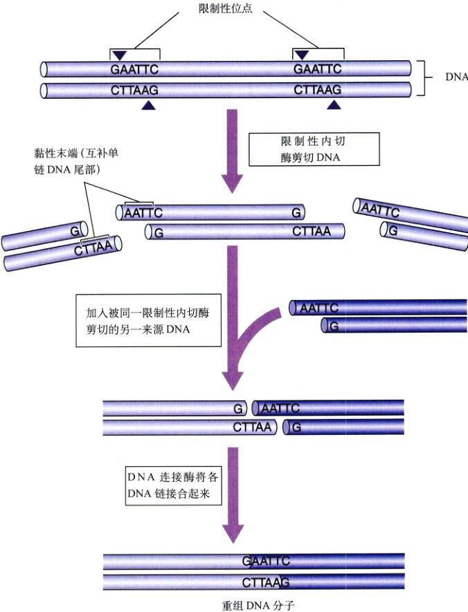
图 19.2 许多限制性内切酶作用生成有黏性末端的 DNA 片段 限制性内切酶 EcoRI 总是在 GAATTC 序列的 G 和 A 之间切入。因为两条链都有同样的序列，两条链将同时被切断。然而，这两个序列在两条链上是沿着相反的方向排列的，结果就产生了互补或者说“有黏性”的单链末端。
一种特定内切酶的识别序列有可能碰巧出现在给定的一个样品 DNA 里，识别序列越短，它碰巧出现在样品里的几率就越大。因此，一种特定的限制性内切酶可能可以把任何来源的 DNA 切成一个个片段，每一个片段都将有彼此互补的单链末端，末端的序列是该内切酶特有的。由于这些末端的互补性，它们可以互相配对（因此它们有时被称为“黏性末端” (sticky end)）。一旦它们的末端完成配对，两个片段就能在磷酸二酯键重新生成的 DNA 连接酶 (ligase) 帮助下接合到一起。限制性内切酶如此重要的原因在于，由同一种限制性内切酶产生的片段中的任何两个都能接合到一起。被同一种内切酶剪切的大象和鸵鸟的 DNA 片段可以像两条细菌 DNA 片段一样很容易地互相结合。
Page 4 / 原始页码 376
19.1.2 使用限制性内切酶操作基因
基米拉 (chimera) 是神话里的一种生物，它有狮子的头、羊的身体和蛇的尾巴。尽管自然界里并不存在这样的生物，但生物学家已经通过基因工程，制造了一种更为细微的基米拉。
1) 构建 pSC101
第一批基米拉中，有一个是美国遗传学家斯坦利·科恩 (Stanley Cohen) 和赫伯特·波尔 (Herbent Boyer) 在 1973 年，用一种叫做抗性转移因子的细菌质粒制造出来的。科恩和波尔使用了从大肠杆菌中得到的一种叫做 EcoRI 的限制性内切酶，把质粒剪切成片段。其中有一个 9000 核苷酸大小的片段，包含有复制的起始点和四环素抗性基因。因为这个片段的两个末端是被同一个限制性内切酶切断的，它们可以连接成环，形成一个较小的质粒，即科恩命名的 pSC101。
2) 用 pSC101 生成重组 DNA
科恩和波尔还使用 EcoRI 来剪切从一种两栖类动物非洲爪蟾 (Xenopus laevis) 中得到的编码 rRNA 的 DNA，并将得到的爪蟾 DNA 片段和由 EcoRI 重新打开的 pSC101 质粒混合，然后让细菌细胞从混合物质中吸收 DNA（图 19.3）。有些细菌细胞立刻获得了对四环素的抗性，这说明它们把 pSC101 质粒与自己的抗生素抗性基因结合并了。而且，从 pSC101 的细菌中也开始产生爪蟾 RNA！科恩和波尔推断，爪蟾 rRNA 基因一定是被人插入到了这个 pSC101 质粒中。换句话说，被 EcoRI 切开的 pSC101 质粒两端，已经和同样被 EcoRI 切开的含有 rRNA 基因的爪蟾 DNA 片段两端结合。
含有爪蟾 rRNA 基因的 pSC101 质粒是一个真正的基米拉，一个自然界中从未出现过且永远不会通过自发方式产生出来的一个全新基因组。它是一种重组 DNA (recombinant DNA)，即在实验室里，通过将来自不同基因组的片段彼此结合产生新组合，从而创造出来的 DNA。
3) 其他载体
在分子遗传学的实践中，将外源 DNA 片段引入到宿主细胞已经是很普遍了。将外源基因运送到宿主细胞中的基因组叫微载体 (vector)。像 pUC18 这类质粒，可以被诱导产生上千个自身的拷贝，同时也就包含成了千百个外源基因的拷贝。更大的 DNA 片段可以用 YACs（酵母细胞人工染色体）代替质粒作为载体来引入。不是所有的载体都以细菌为目标。比如，人类流感病毒——腺病毒之类的动物病毒，是作为将基因引入到猴子和人体等真核细胞的载体，而动物基因也曾被引入到植物细胞中。
第一批用基因工程产生的重组基因组中，有一个是将两栖动物的 RNA 编码基因插入到细菌质粒中形成的。病毒也可以用作载体，将外源 DNA 插入到宿主细胞中，产生重组基因组。
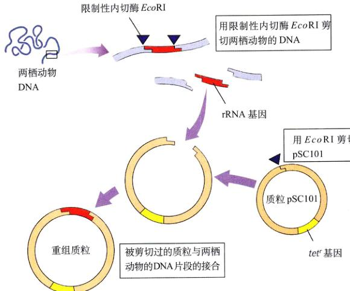
图 19.3 最早的基因工程实验之一 本图展示了科恩和波尔如何将编码 rRNA 的两栖动物基因插入到 pSC101 中。质粒只有一个供限制性内切酶 EcoRI 剪切的位点，它还包含了 tetʳ，一种对抗生素四环素产生抗性的基因。通过 EcoRI 剪切两栖动物的 DNA 和质粒，并使互补序列配对，而把 rRNA 编码基因插入到 pSC101 中。
Page 5 / 原始页码 377
基因操作实例
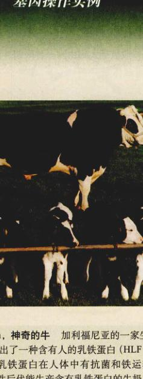
图 19.A Herman，神奇的牛 加利福尼亚的一家生物技术公司 GenPharm 培育出了一种含有的乳铁蛋白 (HLF) 基因的牛——Herman。乳铁蛋白在人体中有抗菌和铁运输等作用。Herman 的许多雌性后代也能生产含有乳铁蛋白的牛奶。GenPharm 打算建立这种转基因牛的群体，用来大规模地生产乳铁蛋白。
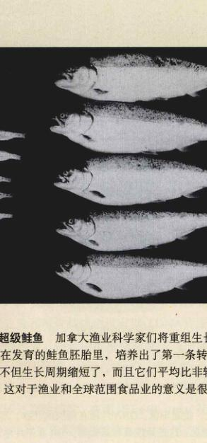
图 19.B 抗枯萎的花 乙烯是使果实成熟的植物激素，同样能使花枯萎。Purdue 的研究者们发现了花瓣应答乙烯而凋落的基因，并将其替换为一个对乙烯不敏感的基因。他们培育出的转基因康乃馨在被剪掉后能维持 3 个星期不枯萎，而普通的康乃馨只能维持 3 天。
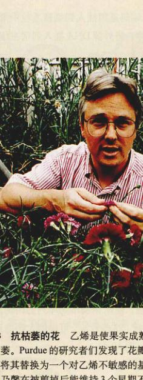
图 19.C 超级鲑鱼 加拿大渔业科学家们将重组生长激素基因插入到正在发育的鲑鱼胚胎里，培养出了第一条转基因鲑鱼。这些鲑鱼不但生长周期缩短了，而且它们平均比非转基因鲑鱼重 11 倍！这对与渔业和全球范围食品业的意义是很明显的。
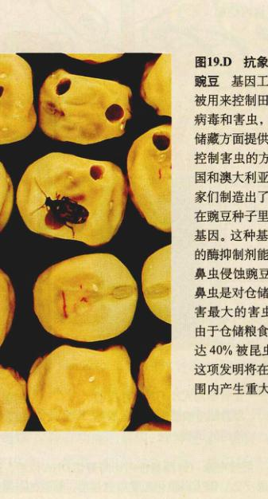
图 19.D 抗象鼻虫的豌豆 基因工程不仅被用来控制田间农业病毒和害虫，它还在储藏方面提供了一种控制害虫的方法。美国和澳大利亚的科学家们制造出了一种只在豌豆种子里的表达的基因。这种基因编码的酶抑制剂能阻止象鼻虫侵蚀豌豆。而象鼻虫是对仓储粮食危害最大的害虫之一。由于仓储粮食中有高达 40% 被昆虫吃掉，这项发明将在全球范围内产生重大影响。
Page 6 / 原始页码 378
19.2 基因工程的操作步骤简单易懂
19.2.1 基因工程实验的 4 个步骤
就像科恩和波尔的实验一样，大多数的基因工程实验包括 4 个步骤：DNA 剪切、重组 DNA 的制备、克隆和筛选。
1) 第一步：DNA 剪切
人们使用限制性内切酶来把 DNA 剪切成片段。因为内切酶的识别序列可能在供体 DNA 上多次出现，剪切将产生许多不同的片段。使用识别不同序列的内切酶，将得到不同的 DNA 片段。这些片段，可根据大小的不同通过电泳彼此分离开（图 19.4）。
2) 第二步：重组 DNA 的制备
DNA 片段被插入到由同一种限制性内切酶剪切过的质粒或病毒载体里。
3) 第三步：克隆
以质粒或病毒为载体，将 DNA 片段引入到细胞——通常是细菌（见图 19.5）中。每当一个细胞繁殖的时候，它将形成一个克隆，其中的每一个细胞都包含着携带 DNA 片段的载体。每一个克隆都被单独保存，所有的克隆共同组成一个供体 DNA 的克隆文库 (clone library)。
4) 第四步：筛选
含有人们所需要的某个特定 DNA 片段（通常是含有某个特殊基因的片段）的克隆被从克隆文库里筛选出来。
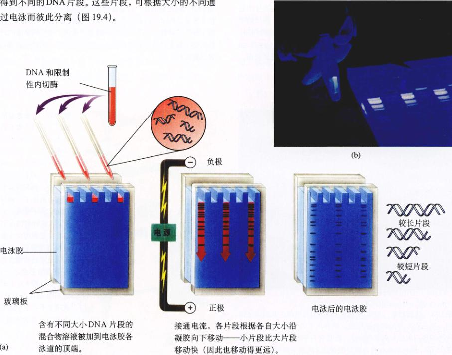
图 19.4 凝胶电泳 (a) 限制性内切酶剪切 DNA 以后，把得到的片段加到凝胶上，接通电流。DNA 片段在凝胶内迁移，其移动速度与大小成反比。因为用溴化乙锭染色过后，移动的条带在紫外光照射下能发出荧光，这些片段很容易看到。(b) 在照片里，DNA 的一条带被从凝胶上切下来，用于进一步的分析。我们能看见它正在技术员拿着的试管里发光。
Page 7 / 原始页码 379
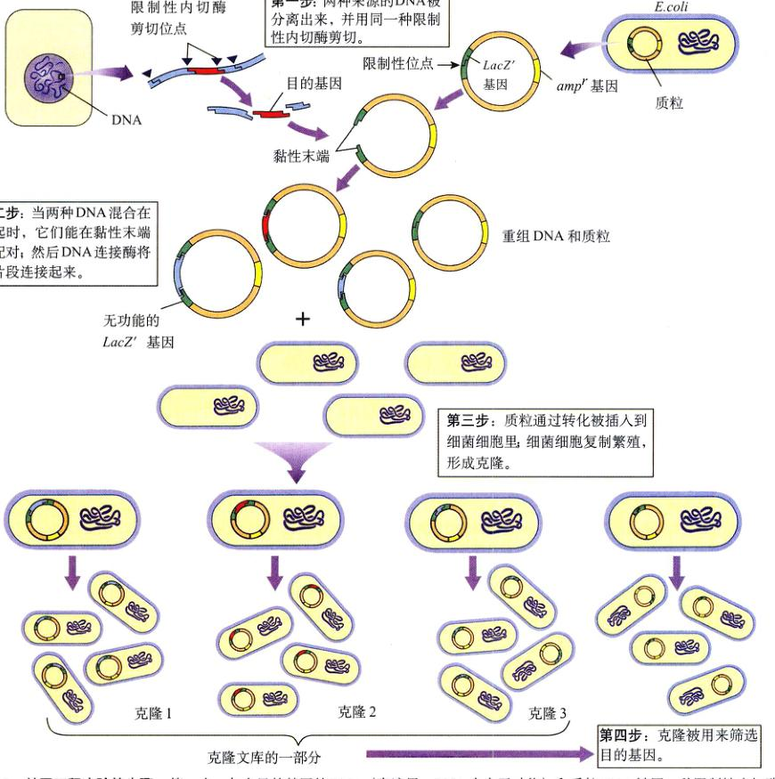
图 19.5 基因工程实验的步骤 第一步：包含目的基因的 DNA（在这里，DNA 来自于动物）和质粒 DNA 被同一种限制性内切酶剪切。质粒含有 ampʳ 和 lacZ' 基因的，用来筛选克隆（第4步）。第二步：将两段被剪切过的 DNA 混合，其黏性末端互相配对。第三步：重组 DNA 插入到细菌细胞中，该细胞增殖，形成克隆。第四步：筛选克隆，以找到目的基因。
这通常是所有基因工程实验中最具挑战性的部分，因此我们将详细介绍这一步骤。
(1) 4-I：克隆的初步筛选 研究者们首先把所有不含载体的克隆和所含载体中没有供体 DNA 片段的克隆从文库里清除出去。通过使用特殊的载体——含有能对抗特定抗生素，如四环素 (tetracycline)、青霉素(penicillin)或氨苄青霉素 (ampicillin)，产生抗性基因的载体——可以将不含载体的克隆清除。在图 19.6a 中，ampʳ 基因被插入到质粒中，并产生抗氨苄青霉素抗性。当把克隆暴露在含有抗生素的培养基中时，只有含有载体的克隆才能抵抗抗生素，从而生存下来。
有一种清除所含载体中没有供体 DNA 片段克隆的方法，是使用一种不仅含抗生素抗性基因还包含 β-半乳糖苷酶 (β-galactosidase)（这种酶使细胞能代谢 X-gal）必需的 lacZ' 基因的载体。X-gal 的代谢造成了一个蓝色反应产物的生成，因此任何一个细胞，只要它的载体中含有这种有功能的基因，都将在 X-gal 存在时变蓝（图 19.6b）。然而，如果对其使用一种识别序列位于 lacZ' 基因内部的限制性内切酶，重组 DNA 产生时，这个基因将被切断，细胞也将不能再代谢 X-gal。因此，所有含有供体 DNA 片段的克隆在 X-gal 的存在下保持无色。
Page 8 / 原始页码 380
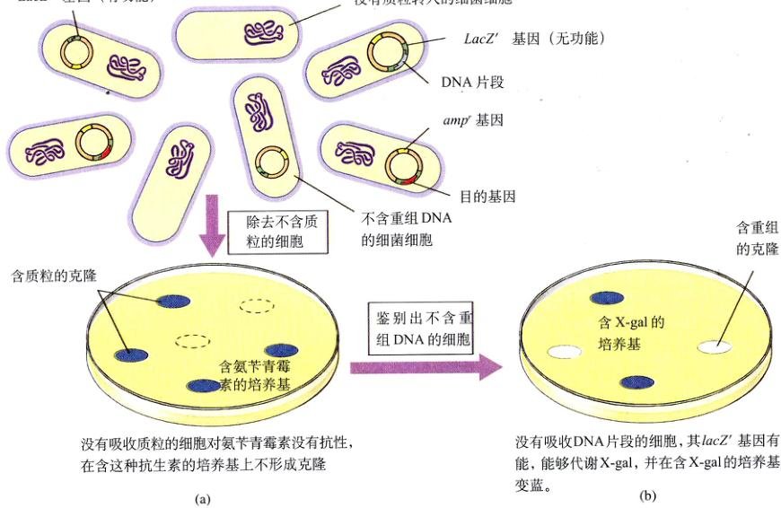
图 19.6 步骤 4-I 使用抗生素抗性和 X-gal 对限制性片段克隆进行初步筛选 将一种重组质粒转化至细菌，该质粒含有一个氨苄青霉素抗性基因 (ampʳ) 和一个产生 β-半乳糖苷酶所必需的基因 (lacZ')，这种酶使糖 X-gal 代谢，结果产生的菌落变蓝。(a) 只有那些整合了质粒的细菌对氨苄青霉素有抗性，能够在含抗生素的培养基上形成菌落。(b) 那些抵抗氨苄青霉素的细菌，如果它们的质粒的 lacZ' 基因中不含有插入 DNA 片段，在含有 X-gal 的培养基中培养时，该菌落将变成蓝色。如果它们的质粒的 lacZ' 基因中含有 DNA 插入片段，细菌将不能进行 X-gal 代谢，因此，在含有 X-gal 的培养基中培养时，该菌落将保持无色。
任何一个能在含抗生素的培养基里生存，但在含 X-gal 的培养基里不变蓝的细胞，一定是插入了含供体 DNA 片段的载体。克隆筛选的下一步是找出含有特定供体 DNA 片段的细菌。
(2) 4-II：找出目的基因 一个克隆文库可能包括几十到好几千个供体 DNA 片段。这些片段中有许多可能是相同的，因此，要构建一个包含完整供体基因组的克隆文库，就需要几十万个克隆。以一个完整的果蝇基因库为例，它含有超过 40 000 个不同的克隆。由 20 000 碱基大小的片段组成的完整人类基因库估计需要近一百万个克隆。要在这样一个巨大的克隆文库中寻找包含对应某个特殊基因片段的克隆需要独创性，但是许多不同的方法已经取得了成功。
在克隆文库里筛选，找到特定基因的最常用的方法是杂交 (hybridization)（图 19.7）。在这种技术中，被克隆的基因与另一段核酸上的互补序列形成碱基对，该互补核酸被称为探针 (probe)，因为它被用来探测目的基因的存在。要制作一个探针，至少要有一部分目的基因的核苷酸序列是已知的。
在这种筛选技术中，含有插入基因的细菌菌落生长在琼脂板上。一些细胞被转移到生长在菌落上的滤纸上，形成了一个平板的副本。滤纸随后用一种能使细菌 DNA 变性，并含有放射性标记探针的溶液进行处理。探针与细胞 DNA 中的互补单链序列杂交。
当把滤纸放在照相胶片上时，有放射性的区域将使胶片感光，即放射自显影 (autoradiography)。只有含目的基因的菌落能与放射性探针杂交，并使胶片感光。然后将胶片上的图案与原先平板上的图案相比较，就一定能找出含目的基因的菌落。
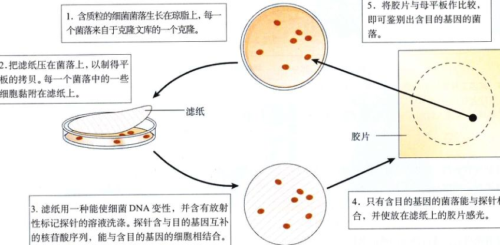
图 19.7 步骤 4-II：用杂交来鉴别目的基因 ①这些细菌培养平皿上的每一个菌落都代表了由单个细胞繁殖产生的数百万个克隆。为了检测一个特定的基因是否包含在某个特定的克隆里，就必须鉴别出其 DNA 能和该基因互补 DNA 序列探针杂交的细胞。②把一张滤纸压在母平板上，使每一个菌落中的一些细胞黏附在滤纸上。③滤纸随后用一种能使细菌 DNA 变性，并含有放射性标记探针的溶液进行处理。④只有那些含有与探针杂交的 DNA，即目的基因的菌落，能在射线自显影中使胶片感光。⑤然后将胶片上的图案与母平板上的图案相比较，以鉴别出含目的基因的菌落。
Page 9 / 原始页码 381
19.2.2 基因克隆
一旦一个基因被成功地克隆出来后，有许多方法可以用来检测它的特征。
1) 得到足够供检测用的 DNA：聚合酶链式反应
一旦从 DNA 片段库里鉴别出了目的基因，就需要进行大规模复制。其中有一种方法是把鉴别出来的片段插入到细菌里，经过持续的细菌分裂复制，将能得到几百万个含有该片段的细胞。然而，还有一种方法要简捷得多，就是用 DNA 聚合酶通过聚合酶链式反应 (polymerase chain reaction, PCR) 来复制目的基因（图 19.8）。Kary Mullis 在 1983 年发明了 PCR，那时他是一名化学家，受雇于 Cetus 公司，1993年，这项发明使他获得了诺贝尔化学奖。PCR 能扩增特定的序列，或者把一些序列（比如限制性内切酶识别序列）作为引物来克隆 DNA。PCR 包括 3 个步骤：
(1) 步骤 1：变性。首先，将过量的引物（通常为 20~30 核苷酸长度的人工合成序列）和需要被扩增的 DNA 片段混合。将这种引物与 DNA 片段的混合物加热到大约 98°C，在这个温度下，双链 DNA 片段解离成单链。
(2) 步骤 2：退火。下一步，将溶液冷却到大约 60°C。在冷却过程中，单链 DNA 重新互相结合成双链。然而由于引物是过量的，DNA 片段的每一条链都更倾向于和一个互补的引物在要扩增的区域旁配对，片段的其他部分仍保持单链状态。
(3) 步骤 3：引物延伸。现在，加入一种叫做 Taq 聚合酶（名称源于嗜热细菌 Thermus aquaticus，Taq 正是从这种细菌中抽提出来的）的非常耐热的 DNA 聚合酶，以及全部 4 种核苷酸。利用引物，聚合酶把片段的其他部分复制下来，就像是在细胞里复制 DNA。完成以后，引物被加长成单链片段的完整互补拷贝。因为 DNA 的两条链都被复制，现在就有了原片段的两个拷贝。
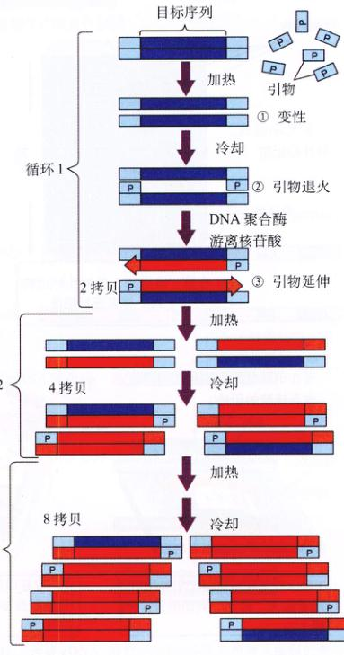
图 19.8 聚合酶链式反应 (1) 变性。加热含引物和待扩增 DNA 片段的溶液，以使 DNA 解离成单链。(2) 退火。冷却溶液，引物与 DNA 片段的互补序列在要扩增的区域旁配对。(3) 延伸。接下来，DNA 聚合酶由引物起开始复制每一条链的剩余部分。然后重复步骤 (1) 到 (3)。这一过程重复多遍，每一次都使拷贝的数量加倍，直到产生足够供实验验用的拷贝。
Page 10 / 原始页码 382
然后重复步骤 1 到 3，两个拷贝就变成了 4 个。由于加热步骤不聚会对这种特殊的酶活性造成破坏，不需要加入更多的聚合酶。每一次加热-冷却循环只需 1~2min，就能使 DNA 分子的数量加倍。20 个循环过后，单个的片段就能产生超过 100 万 (2²⁰) 的拷贝！几小时内，就能生产出该片段的 1000 亿个拷贝。
PCR 现在已经是全自动的了。由于它能用来研究微量的 DNA 样品，给科学和医疗的许多领域带来了革命。在犯罪调查中，可以用于干了的血液斑点或一根人头发根部的细胞制得 “DNA 指纹 (DNA fingerprints)”。医生通过收集脱落的细胞并扩增它们的 DNA，可以检测出非常早期胚胎中的基因缺陷。PCR 还能用来研究历史人物（比如亚伯拉罕·林肯），以及已灭绝物种的 DNA，只要有极少量的 DNA 保持完整就行。
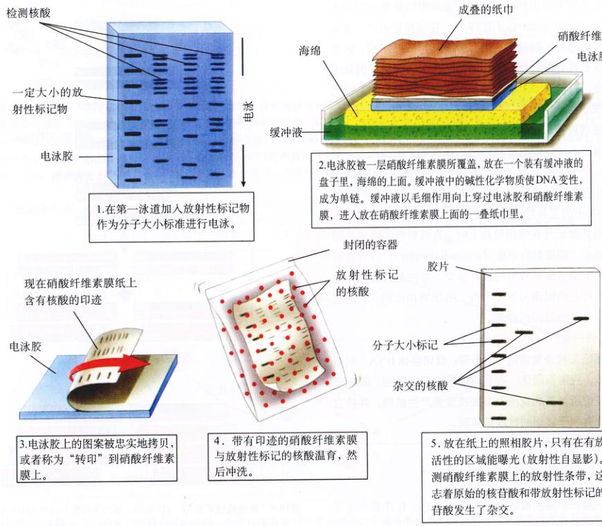
图 19.9 Southern 印迹法 E. M. Southern 在 1975 年发明了这种方法，它能从一个复杂的、含许多相同大小的其他 DNA 片段的样品中找到目的 DNA 片段。DNA 样品光在凝胶上分离，再转移（“印”）到一种固体支持介质中，比如硝酸纤维素膜或尼龙膜。然后，将其与一种放射性标记的目的基因单链拷贝孵育，在印迹上它将与互补序列的片段杂交。印迹上放射性条带的位置即是目的基因的位置。
Page 11 / 原始页码 383
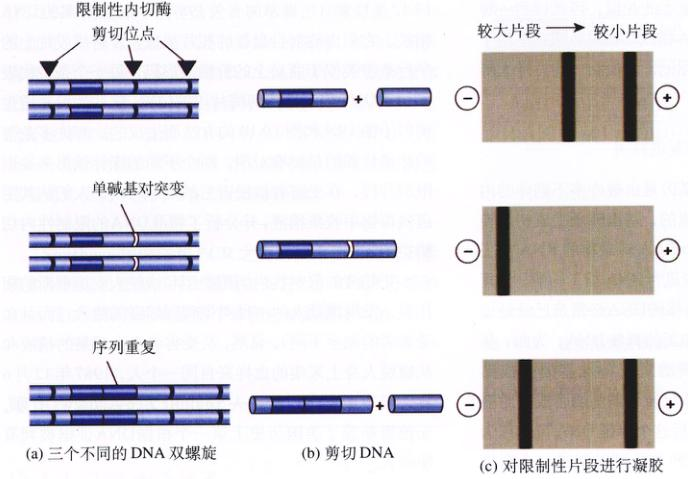
图 19.10 限制性片段长度多态性 (RFLP) 分析 (a) 3 个限制片段类型有区别的 DNA 样品，原因是在其中一个发生了单碱基对替代，另一个发生了序列重复。(b) 当样品用同一利限制性内切酶剪切时，产生了不同数目和大小的片段。(c) 凝胶电泳分离各片段，产生不同的条带类型。
2) 鉴别 DNA：Southern 印迹法
一旦基因被克隆出来，它可以用作探针，以鉴别另一个样品中相同或相似的基因（见图 19.9），这个方法叫做 Southern 印迹法 (southern blot)。在这个方法中，样品 DNA 用限制性内切酶剪切后通过凝胶电泳将这些片段分离。凝胶的 pH 为碱性，使得每一个 DNA 片段的双链螺旋都被解离成单链，然后把胶“转印”在硝酸纤维素膜上，使 DNA 链转移到膜上。接下来，把一种纯化的与目的基因（或由该基因转录而得的 mRNA）对应的 DNA 探针加到膜上，任何含有与探针序列互补的核苷酸序列片段都将与探针配对。如果探针已用 ³²P 标记，它将具有放射性，当探针与互补片段杂交后，膜就会呈现出一条有放射性的区带。
3) 找出 DNA 之间的差别：RFLP 分析
通常一个研究者不是要找某一个特定的基因，而是要用一个特定的基因作为标记物来鉴别出一个特殊的个体。实现它的一种强有力方法就是分析限制性片段长度多态性 (restriction fragment length polymorphism, RFLP)（图 19.10）。在限制性内切酶识别位点处或各位点之间出现的点突变、序列重复，以及转座子将改变 DNA 片段（限制片段）的长度。来自不同个体的 DNA，其限制性位点极少可能恰好相同的排列和位点间距（除非具有相同的限制性片段式样而具有多态性 (即有多种形式)。通过用特定的限制性内切酶剪切 DNA 样品，用凝胶电泳分离各片段，放射性探针鉴别胶上的片段，可以得到一种类型的条带，通常这些“DNA 指纹”在犯罪调查中用于法庭分析。RFLPs 还可用作标记，以记录一些特殊人群患某种遗传病的风险。
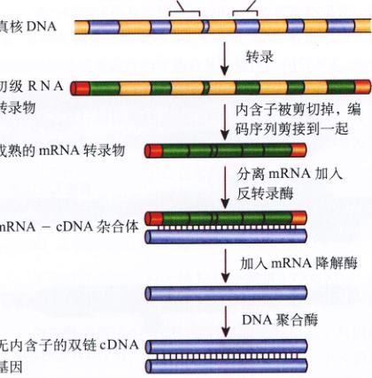
图 19.11 合成 cDNA 成熟的 mRNA 转录物被从细胞的胞质中分离出来。用反转录酶来生成一条与加工后的 mRNA 互补的 DNA 链。新生成的 DNA 链被用作 DNA 聚合酶的模板，组装出一条与之互补的 DNA 链，从而生成了 cDNA，无内含子 mRNA 的双链 DNA 形式。
4) 制作无内含子的真核基因拷贝
回忆一下第15章，真核基因是由被许多不翻译的内含子间隔开的外显子编码而成的，基因转录生成初级转录物后，内含子在生成成熟 mRNA 转录物的 RNA 加工过程中被切掉。因为细菌缺少进行 RNA 加工的酶，把真核基因转移到细菌里时，转移的 DNA 必须是已经过滤了这一步加工的，而不是未加工的真核 DNA。为此，基因工程师们先从胞质分出对应特殊基因的成熟 mRNA，然后他们用一种叫微做反转录酶的酶合成其对应的 DNA 形式（图 19.11）。这个单链 DNA 可以作为模板以合成其互补链。用这种方法可以制作一个双链 DNA 分子，它含有无内含子的基因，这种分子叫做互补 DNA (complementary DNA)，或 cDNA。
Page 12 / 原始页码 384
5) DNA 指纹
就像以前提到的，两个个体极少可能产生相同的 RFLP 分析结果，因此这些 DNA 指纹可用于犯罪调查。图 19.12 是检察官所展示的有关 1987 年一桩强奸案的 DNA 指纹。它们由放射自显影的相片组成，X 射线胶片上的平行条带类似于商品的某种条形码，每一个条带代表了一条 DNA 限制性内切酶片段的位置，这些片段是通过类似于图 19.4 和图 19.10 的方法而生成的。有许多条带的泳道代表的是标准对照。两个不同的探针被用来鉴别限制片段。在受害者被侵害后的几小时内，人们从其阴道残留物中收集精液，并分析了精液 DNA 的限制性内切酶类型。
把精液的限制性内切酶类型和嫌疑人安德鲁鲁斯的相比较，发现嫌疑人的两种类型和强奸者的吻合（而且和受害者的完全不同）。显然，从受害者身上采集的精液和从嫌疑人身上采集的血样来自同一个人。1987年12月6日，陪审团宣布，嫌疑人 Tommie Lee Andrews 有罪。安德鲁鲁斯成了美国历史上第一个根据 DNA 证据被判有罪的人。
自安德鲁斯案以来，DNA 指纹在超过 2000 件法庭诉讼中被允许作为证据（图 19.13）。有一些探针显示的是许多人共有的特征，而另外一些则显示的是非常罕见的特征。使用多个探针，可以很清楚地确定或排除其身份。

图 19.12 1987年使汤米·李·安德鲁斯被判强奸罪的两个 DNA 图谱 这里看到的两个 DNA 探针被用来检验从受害者身上分离出来的 DNA，强奸者留下的精液和嫌疑人的血液。深色的泳道为标准分子量。嫌疑人的 DNA 和强奸者的 DNA 完全吻合。
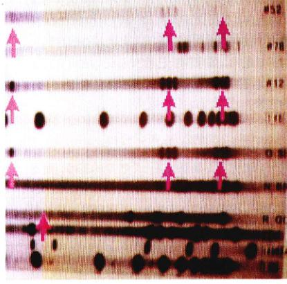
图 19.13 1995年，在 O. J. Simpson 那桩产生广泛影响和争议的谋杀案中，他的 DNA 和在他前妻被误杀现场找到血样的图谱。
Page 13 / 原始页码 385
正如指纹曾在 20 世纪初给法庭证据带来了革命一样，DNA 指纹如今也在给它带来革伞。一根头发、一小块血斑、一滴血液都可以用作 DNA 的来源，以确认或洗清嫌疑。正如分析安德鲁斯案的人所说：“这就象你把你的名字、地址和社会保险号码留在了犯罪现场，也就是这样准确。”当然，DNA 样品的实验室分析必须慎重——粗糙的操作可能导致错误的判断。由于有时实验过程受到质疑，此业正在制定国家标准。
19.3 生物技术正引起一场科学变革
19.3.1 DNA 测序技术
最近几年，生物工程领域出现一种有影响的事件，应用基因工程解决实际的人类问题。
1) 基因组测序
基因工程技术正使我们能够从人类基因组中学到更多的东西。利用大的限制片段，人类基因组的一些克隆文库已经被组装完毕。通过使用探针检测的原位杂交 (in situ hybridization) 技术（也就是说，探针与染色体上的互补序列相结合），任何克隆出来的基因现在可以被定位到一个具体的染色体位点上。基图谱正正在以令人惊讶的速度被描绘出来，那些导致阅读障碍、肥胖和抗胆固醇血液的基因只是重点研究的一小部分。当我们对特定的基因位于人类基因组中何处以及如何工作有了认识之后，不难想象，在未来几乎任何基因疾病都可以被治愈，甚至可能是用基因疗法来治疗。正如第 13 章里提到的那样，在用造成囊肿性纤维化 (cystic fibrosis) 的正常基因来治疗患有囊肿性纤维化的病人方面，据报道已经有了一些成功的实例。
近年来在 DNA 测序技术方面取得令人兴奋的科学进展，使人们对完整的基因组进行 DNA 测序成为可能（表 19.1）。研究者们首先把研究焦点放在微生物上，它们的基因组相对较小，在几百万个核苷酸碱基对 (Mb) 的数量级上。大致而言，约一半的基因被证明有一个确定的功能，另一半具体有何作用还是个谜。
第一批被真核完整测序的真核生物是微生物，如酿酒酵母 (Saccharomyces cerevisiae) (13 Mb) 和引起疟疾的疟原虫 (Plasmodium) (30 Mb)。第一个 DNA 序列被完整测出的动物是线虫 (Caenorhabditis elegans) (100 Mb)，当时是 1998 年 12 月，接下来是果蝇 (Drosophila) (120 Mb) 和小鼠 (300 Mb)。植物拟南芥 (Arabidopsis) (100 Mb) (图 19.14) 和水稻 (430 Mb) 的基因组测序在 2001 年完成。
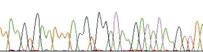
图 19.14 植物拟南芥的部分基因组序列 DNA 自动测序操作得到的数据，显示了拟南芥基因组中的一小段核苷酸序列。DNA 自动测序极大提高了基因组测序的速度。
通过研究这些基因组序列，令人吃惊的结果之一就是，各种生物在基因水平上是那么地类似。线虫中 42% 的基因和其他关系统远的生物有某种程度的相似关系。果蝇的基因中至少有 83% 和其他物种相似。然而这种相似并不完美，执行同样功能的基因序列已经各自漂变了几百万年，但其功能是一致的。比如，当用小鼠中一个涉及眼睛发育的基因取代它在果蝇里的类似物后，生下来的果蝇长有正常的能发挥作用的眼睛。
2) 人类基因计划
人类基因组包含有大约 32 亿个碱基 (3200 Mb)，因此它的测序是一个很大的挑战。一种所谓的散弹枪克隆技术使快速测序成为可能，这种技术是先把整个基因组进行测序，然后由计算机利用重叠部分来给片段排序。除了一小部分序列外，其他所有的序列到 2000 年已经完成测序。人类基因组的基因数目只有大约 3 万个（图 19.15），这仅仅比线虫的多三分之一，几乎不到果蝇基因数目的两倍，而且只是原先预计数目的四分之一。我们凭直觉认为，我们自身比线虫或果蝇远为复杂，然而实现复杂性并不需要许多基因。
Page 14 / 原始页码 386
表 19.1 基因组测序工程
| 生 物 |
基因组的大小 (Mb) |
说 明 |
| 古细菌 (Archaebacteria) |
| 詹氏甲烷球菌 (Methanococcus jannaschii) |
1.7 |
极度嗜热 |
| 真核细菌 |
| 生殖道枝原体 (Mycoplasma genitalium) |
0.6 |
已知的最小的生物 |
| 幽门螺杆菌 (Helicobacter pylori) |
1.7 |
溃疡 |
| 霍乱弧菌 (Vibrio cholerae) |
4.0 |
常造成严重疾病 |
| 结核杆菌 (Mycobacterium tuberculosis) |
4.4 |
肺结核 |
| 大肠杆菌 (Escherichia coli) |
4.6 |
实验室标准 |
| 真菌 |
| 酿酒酵母 (Saccharomyces cerevisiae) |
13 |
发酵用酵母 |
| 原核生物 |
| 疟原虫 (Plasmodium) |
30 |
疟原虫 |
| 植物 |
| 拟南芥 (Arabidopsis thaliana) |
100 |
芥科植物 |
| 水稻 (Oryza sativa) |
430 |
商业用大米 |
| 动物 |
| 线虫 (Caenorhabditis elegans) |
100 |
线虫 |
| 果蝇 (Drosophila melanogaster) |
120 |
果蝇 |
| 小鼠 (Mus musculus) |
300 |
小鼠 |
| 人 (Homo sapiens) |
3200 |
人类 |
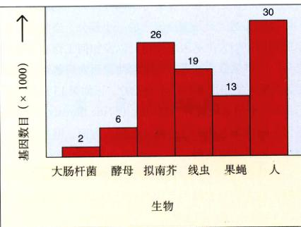
图 19.15 人类基因组是什么样子 人类基因组含有的基因出乎意料少，只有大约 3 万个。这并不比植物拟南芥多多少，只比线虫多三分之一。
与其他真核生物相比，人类基因高度片段化，分散为许多外显子，散落在比其大得多的非编码内含子中。外显子以不同的组合方式接合，使人类在蛋白质水平上获得了额外的多样性。
基因并不是在整个基因组中均匀分布的。19 号染色体上很稠密地分布着基因、转录因子和其他功能因子。与之相反，大得多的 4 号和 8 号染色体只有很少的基因。在大多数染色体上，大段大段看起来无用的 DNA 填充在分散稀疏的基因簇之间。
人类基因组中只有 1%~1.5% 是编码蛋白质的基因，基因组中至少三分之一是由非编码重复序列组成的。富含 CG 的重复序列通常出现在基因的附近，而富含 AT 的重复序列则在无基因部分占统治地位。染色体组型上的亮带现在得到了解释——它们是富含 CG 的区域和基因，暗带则表示富含 AT 并且稀少的区域。基因稠密的 19 号染色体只有很少的暗带。人类基因组中有大约 25% 根本不含基因。
Page 15 / 原始页码 387
可能从人类基因组序列中学到的最令人吃惊的一课就是人类与其他生物体到底有多么类似。果蝇超过一半的基因都有人类基因的类似物，在哺乳动物之间的区别更小，人类只有 300 个基因在老鼠基因组中找不到对应物。这预示着当前的基因组被测序时，它将拥有近乎全部人类所拥有的基因。
从人类基因组中可以读出真核生物的进化历史。大约 230 个细菌基因存在于我们的染色体中，它们是在远古时期从细菌那里“借”来的。编码中枢神经系统里的一个重要降解酶——单胺氧化酶，就是从细菌那里继承下来的，还有其他的基因是由形成线粒体的共生细菌提供的。
19.3.2 生物芯片
3) 蛋白质组学：下一个前沿课题
现在，人类基因组的测序已经基本完成，研究者们已经开始了一项更为艰巨的任务：致力于分类和分析人体的每一个蛋白质，即蛋白质组学 (proteomics)。每一个基因的核苷酸序列对应一段以某种确定方式折叠的氨基酸序列。只有当我们明白了基因产生的蛋白质形状，才能够理解人类基因组。
理论上，研究者可以检查核苷酸序列，从而得知基因对应何种类型的功能蛋白质。然而，以氨基酸序列为基础推算一个蛋白质的形状事实上是很困难的，即使有大型计算机的帮助也然是这样。通过研究人类基因组基因产生的蛋白质，研究者们才对基因序列对应何种蛋白质和功能有了更清晰的认识。
幸运的是，虽然蛋白质可能有 100 万种之多，并且其中大多数只是一些主要类型的衍生物。一些相同的结构域——环、螺旋、分子拉链——广泛存在于植物、昆虫和人类的蛋白质中。据估计，不同的结构域最多不到 5000，并且这些结构域中大约有 1000 个已经得到了分类。一些公共机构和私人组织目前正在对所有普通结构域的形状做细节上的研究。
1) 生物芯片如何用来检测癌症
一个癌症专家在治疗肿瘤时所面临的最大抉择之一就是选择适合的治疗方法。大多数癌症细胞看起来都差不多，然而事实上肿瘤可能由不同的癌症引起。如果癌症专家能够清楚地鉴别出癌症的种类，就能够采取很有针对性的治疗方法。然而，由于不能确定地分辨出差异，癌症专家们则别无选择。肿瘤的治疗采用攻击所有类型癌症的方法，通常有很严重的副作用。
今年波士顿的两位研究人员 Todd Golub 和 Eric Lander 在治疗癌症方面迈出了重要的一步，使用新的 DNA 技术来找出肺癌的突变是由烟草诱导的某个基因的差异。Golub 和 Lander 使用的就是生物芯片。
Fodor 发明的一次偶然的机会，他发现用来把半导体电路蚀刻 (etch) 到硅片里的照相平版术，同样可以被用来在芯片上组装特定的 DNA 分子——即生物芯片。
设想芯片表面是由结合位点组成的区域，类似于电视屏幕是由彩色点组成的区域一样。就像一束扫描电波移过每一个电视屏幕上的点，使它们呈现出红、绿或蓝色（所有颜色的 3 种组成部分），同样一束扫描波在芯片的每一点上移过，指挥那里正在生长的 DNA 链加上一个碱基。一台电脑通过改变扫描波的波长，来决定 4 种可能的核苷酸中，哪一个被加到正在生长的 DNA 链上，该 DNA 链已经锚定在每一个结合位点上。当整个芯片被扫描后，每一条 DNA 链都被加长了一个核苷酸单位。电脑一层又一层地重复这一步骤，直到每一个 DNA 链都已经是一个完整的基因或基因片段。用这种方法制作出来的一张生物芯片包含有几十万个特定的基因序列。
怎样利用这样的生物芯片来研究一个人的基因呢？你所要做的就是得到那个人的部分 DNA，比方说，从血液样品，或者是甚至是从一小段头发中。将含有那些 DNA 的液体浸没生物芯片的表面，一旦那些 DNA 中有一个基因与生物芯片上的一条链匹配，在每一个这样的地方，它们将以一种能被电脑探测到的方式结合在一起。
人类基因测序所需的大量工作已经成为过去，集聚基因研究成果最近宣布，超过 90% 的基因序列已经完成。研究者们已经在此忙着把它们的“参考序列”与其他人类个体的 DNA 相比较，并记录所有他们观察到的区别。这处在特定核苷酸位置的差异，即所谓的单核苷酸多态性 (single nucleotide polymorphisms) 或者叫 SNPs（发音为 “snips”），记录了所有的特定个体与参考序列相区别的方式。有些 SNPs 能导致疾病，比如囊肿性纤维化或者镰刀型细胞贫血 (sickle cell anemia)，也有一些可能带给你红头发或血液中的高胆固醇含量。随着人类基因组工程接近完成，研究者们正满怀兴奋地组建一个庞大的 SNPs 数据库。研究显示，SNPs 大约以 1/1000 个核苷酸的频率出现，在染色体上以近乎随机的方式分布。因此每个人都将与标准的“模式序列”相差几千个核苷酸。你不同于陌生人的任何一个遗传特征都是由几千个 SNPs 造成的；否则你将和那个陌生人一模一样。
Page 16 / 原始页码 388
找出两种癌症之间差异的方法是比较在初始位置发生的导致癌症的突变，生物学家把这样的基因变化叫做突变，引起多种肺癌的突变是由烟草诱导的某个基因上一个核苷酸的变异造成的。这种某个基因在一个与另一个人，或者与一个癌症病人之间的点差异，就是 SNPs 的例子。
Golub 和 Lander 从两种白血病（即白细胞癌）的患者那里得到了骨髓细胞，并将其 DNA 放到含有所有已知的人类基因（总共 6817 个）的生物芯片上（图 19.16）。运用高速的电脑程序，Golub 和 Lander 检查了芯片上所有 6817 个位点。这两所种类型的白血病基因与普通基因相比，都显示出基因变异。然而，很重要的一个点是，两者的变异是不同的！它们各有自己特征性的 SNPs。
由此可以看出，生物芯片可以提供一种快捷而又可靠的鉴别癌症种类的方法。只要知道出现的是哪一个 SNP 就行了。
2) 基因芯片的使用不久将得到普及
下一个千年，生物芯片技术可能将在医药产业方面占据统治地位，这是一个令人既兴奋又担心的前景。研究人员宣布了在未来两年里构建一个含有几十万个 SNPs 数据库的计划。通过筛选 SNPs，并把它们与已知的数据库相比较，不久将使医生能为每一个人筛选出能导致遗传病的基因拷贝。许多遗传病与 SNPs 有关，包括囊肿性纤维化和肌肉萎缩症。
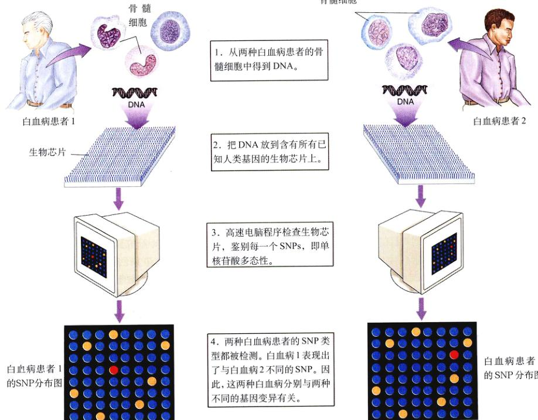
图 19.16 生物芯片能够帮助鉴别癌症的确切种类 1. 从两种白血病患者的骨髓细胞中得到 DNA。 -> 2. 把 DNA 放到含有已知人类基因的生物芯片上。 -> 3. 高速电脑程序检查生物芯片，鉴别每一个 SNPs，即单核苷酸多态性。 -> 4. 两种白血病患者的 SNP 类型都被检测。白血病 1 表现出了与白血病 2 不同的 SNP。因此，这两种白血病分别与两种不同的基因变异有关。
Page 17 / 原始页码 389
3) 生物芯片引发围绕个人隐私的重要讨论
芯片上的 SNPs 也有可怕的一面。研究人员计划到 2001 年鉴别出大约 30 万个不同的 SNPs，所有这些都可以在置在一块生物芯片上。当把一块 SNP 生物芯片浸入含你 DNA 的溶液中时，那些发光的序列将立刻显示出你的 SNP 类型。
你自己独特的遗传特征，以及可能影响到你的健康、行为和未来潜力的基因——所有这些，对于任何一个会解读 SNP 类型的人来说，将是唾手可得的。
你的基因在多大程度上是你？科学家们为此问题展开争论，但没人真知道答案。很明显，我们每个人的差异受到基因组成的影响。研究者们已毫无疑问地证明，智力和主要的个性特征，比如进取性和好奇心，有 80% 可遗传的（也就是说，这些特征中有 80% 反应了基因的变化）。
你的 SNP 类型将反映所有的这种变化，它是一张关于你染色体内容的表格，一个说明你作为一个分子的简介。在未来的几年里，当几百万个这种 SNP 类型被收集起来时，计算机将能够鉴别出其他一些和你相似 SNP 类型的人。而且，通过研究健康记录、标准化测试以及爱好，可以将你的 SNP 类型与特殊的性状相关联。甚至那些涉及多基因的性状，虽然现在因为太复杂而无法分析，但是最终也将通过计算机比较 SNP 的特点而攻破。
19.3.3 医药方面的应用
1) 药物
基因工程的第一个也可能是最明显的一个商业用途，就是把编码有治疗作用蛋白的基因引入到细菌。因为细菌细胞能够以很低廉的成本大量繁殖（在巨大的罐里发酵，就像生产啤酒的酵母一样），插入了重组基因的细菌能够大量地合成该基因所决定的蛋白质。这种技术被用来生产几种人类胰岛素和干扰素，以及其他一些有商业价值的蛋白质，比如生长激素（图 19.17）和能刺激红细胞产生的促红细胞生长素。
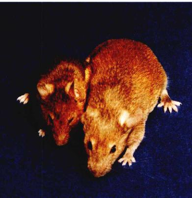
图 19.17 基因工程方法生产人类生长激素 这两只老鼠有相同的基因，只是大的那只多有一个额外的基因：编码人类生长激素的基因。这个基因被基因工程师们加入到小鼠的基因组中，现在已经在为小鼠遗传信息中稳定表达的基因。
在用这些方法生产的有用价值的蛋白质中，有一种叫做心房钠尿肽 (atrial natriuretic peptide) 的小型蛋白质，它为高血压和肾衰竭疾病提供了一条新的治疗途径。还有一种叫做组织纤溶酶原激活物 (tissue plasminogen activator) 的人类蛋白质，它在体内微量合成，能够使血栓溶解，可以有效地防止和治疗心脏病和中风。
这种方面临的问题是如何把目的蛋白和细菌制造的其他物质分离开。从这种复杂的混合物中提纯蛋白质既费时又昂贵，但它仍然比从动物组织中分离蛋白质（例如，从猪的胰腺里提取胰岛素）要简单得多。然而，最近研究人员成功地生产了克隆基因的 RNA 转录物，他们可以用这种转录物，在含有转录 RNA、核糖体、辅因子、氨基酸、tRNA 和 ATP 的试管中专一地生产这些蛋白质。
2) 基因疗法
1990年，研究者们首次尝试用转移人类基因的方法治疗基因缺陷。如果一种遗传性病症是由单个缺陷基因所造成的，一种明显的治疗方法就是加入一个正常的基因拷贝。这种方法曾用于治疗囊肿性纤维化，并且表现出在治疗肌肉萎缩症 (muscular dystrophy) 和许多其他遗传性疾病方面的潜力（表 19.2）。最初的成功尝试之一，是把编码腺苷脱氨酶 (adenosine deaminase) 的基因转移到患有一种罕见的两个女孩的骨髓里，这种病称为重症联合免疫缺陷综合征 (severe combined immunodeficiency, SCID)。
Page 18 / 原始页码 390
表 19.2 目前在临床实验中采用基因疗法的疾病
| 疾 病 |
| 癌症（黑色素瘤、肾细胞瘤、卵巢瘤、成神经细胞瘤、脑瘤、头颈部癌、肺癌、肝癌、乳腺癌、结肠癌、前列腺癌、间皮瘤、白血病、淋巴瘤、多骨髓瘤） |
| 重症联合免疫缺陷综合征 (severe combined immunodeficiency, SCID) |
| 囊肿性纤维化 (cystic fibrosis) |
| 高歇病 (Gaucher's disease) |
| 家族性高胆固醇血症 (familial hypercholesterolemia) |
| 血友病 (Hemophilia) |
| 嘌呤核苷磷酸化酶缺陷症 (purine nucleoside phosphorylase deficiency) |
| Alpha-1 型抗胰蛋白缺陷症 (Alpha-1 antitrypsin deficiency) |
| 范康尼贫血症 (Fanconi's anemia) |
| 亨特综合征 (Hunter's syndrome) |
| 慢性肉芽肿病 (chronic granulomatous disease) |
| 风湿性关节炎 (rheumatoid arthritis) |
| 外周血管病 (peripheral vascular disease) |
| 获得性免疫缺陷综合征 (AIDS) |
的病因是缺乏这种酶。尽管许多临床实验正在进行中，但是还没有其他哪一个实验被证明是成功的。这充分说明了基因疗法需要付出更多的努力。
3) 疫苗
基因工程另一个有潜在价值的领域是生产亚单位疫苗 (subunit vaccines)，用于抗病毒，比如引起疱疹和肝炎的病毒。编码单纯疱疹病毒或 B 型肝炎病毒的蛋白质——多糖外壳的基因被接合到牛痘 (cowpox) 病毒基因组片段中（图 19.18）。早在 200 年前，英格兰医生 Edward Jenner 就使用接种牛痘的方法来抵抗天花。现在，该牛痘病毒被用作载体，来运送疱疹或肝炎病毒外壳基因进入培养的哺乳动物细胞中，这些细胞产生许多重组病毒的拷贝，每一个都有着疱疹或肝炎病毒的外壳。当这种重组病毒被注射到一只老鼠或兔子体内时，被感染动物的免疫系统产生识别重组病毒外壳的抗体。用这种方法产生的疫苗是无毒的，因为疫苗病毒是良性的，而且只有一小段致病病毒的 DNA 通过重组病毒被引入。这种方法的强大吸引力在于，它跟所预防的病毒性疾病性质无关。将来，类似的重组病毒将可以被注射到人体内，以提供对许多病毒性疾病的抗性。
1995年，一种新颖的 DNA 疫苗 (DNA vaccine) 首次进入临床实验。这种疫苗并不依赖抗体，而是依赖于人体免疫防御的第二套机制，即细胞免疫反应，利用杀伤 T 细胞来进攻被感染的细胞。当被感染细胞的表面附着了外源蛋白质的片段时，T 细胞能检测到并将其杀死 (Peter Doherty 和 Rolf Zinkernagel 发现了被感染细胞的这一特性，并因此获得了 1996 年诺贝尔生理学医学奖)。第一个 DNA 疫苗将是一个编码内部核蛋白的流感病毒基因插入质粒，然后将其注射到老鼠体内。老鼠对流感病毒产生了很强的细胞免疫反应。这种崭新而充满争议的方法，有着非常诱人的前景。
Page 19 / 原始页码 391
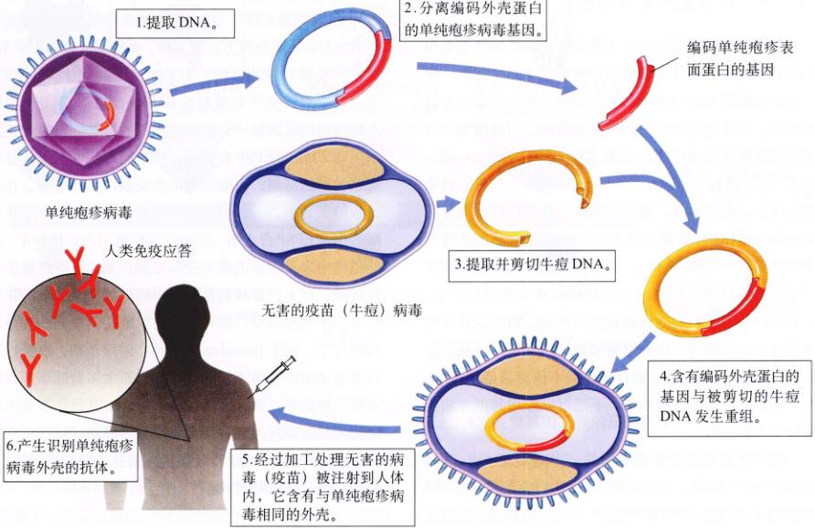
图 19.18 构建疱疹病毒亚单位疫苗的方法 1. 提取 DNA -> 2. 分离编码外壳蛋白的单纯疱疹病毒基因 -> 3. 提取并剪切牛痘 DNA -> 4. 含有编码外壳蛋白的基因与被剪切的牛痘 DNA 发生重组 -> 6. 产生识别单纯疱疹病毒外壳的抗体 -> 5. 经过加工处理无害的病毒（疫苗）被注射到人体内，它含有与单纯疱疹病毒相同的外壳。
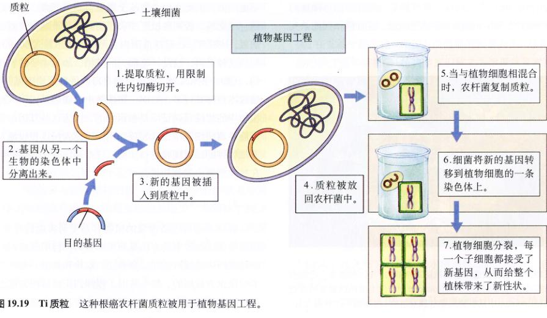
图 19.19 Ti 质粒 这种根癌农杆菌质粒被用于植物基因工程。 1. 提取质粒，用限制性内切酶切开 -> 2. 基因从另一个生物的染色体中分离出来 -> 3. 新的基因被插入到质粒中 -> 4. 质粒被放回农杆菌中 -> 5. 当与植物细胞混合时，农杆菌复制质粒 -> 6. 细菌将新的基因转移到植物细胞的一条染色体上 -> 7. 植物细胞分裂，每一个子细胞都接受了新基因，从而给整个植株带来了新性状。
Page 20 / 原始页码 392
19.3.4 农业生产方面的应用
基因工程应用的另一个主要活跃领域是重要粮食作物的基因改良。在对植物的实验中最困难的是找到一种适合送分生组织不 DNA 载体。植物细胞不像细菌那样有许多质粒，因此可供选择的载体是有限的。目前为止最成功的结界是使用根癌农杆菌 (Agrobacterium tumefaciens) 的 Ti 质粒 (tumor-inducing plasmid)，它可以侵染阔叶植物，比如番茄、烟草和大豆。Ti 质粒的一部分可以整合进植物 DNA，研究人员成功地把其他基因连接到这一部分质粒中（图 19.19）。通过使用这种技术，改变了许多植物的性状，这在改良作物和森林方面很有价值。科学家们希望能影响的性状包括抗病、霜冻以及其他类型胁迫的抵抗力，营养均衡和蛋白质含量，以及抗除草剂的能力。不幸的是，农杆菌一般不能感染诸如玉米、大米和小麦之类的谷类作物。不过可以应用其他方法给它们引入新基因。
近年来因改变果实方面的一个进展是 Cal-Gene 的 "Flavr Savr" 番茄，它已得到了 USDA 的销售许可。这种番茄经过改造，能抑制细胞合成乙烯的基因。在番茄和其他植物中，乙烯是加速果实成熟的激素。对于 Flavr Savr 番茄来说，抑制乙烯的产生就延迟了成熟，这样就导致了这种番茄能在藤蔓上停留更长的时间，并且可以抵抗在运输到市场过程中的过熟和腐烂。
1) 抗除草剂能力
近来，阔叶植物经过基因改造可以对草甘膦 (glyphosate) 产生抗性。草甘膦是一种强力的可降解的除草剂——Roundup 中的活性成分。这种除草剂能杀死绝大多数生长的植物（图 19.20）。草甘膦通过抑制 EPSP 合成酶而发挥作用，植物需要这种酶来合成芳香氨基酸。人类不能合成芳香氨基酸，而需要从饮食中获取，所以不受草甘膦的影响。为了创造出抗草甘膦的植物，农业科学家们使用 Ti 质粒把 EPSP 合成酶的额外拷贝插入到植物的基因组中。这些改造过的植物能产生比正常水平高 20 倍的 EPSP 合成酶，使它们即使受到了草甘膦这种酶的抑制，仍能正常地合成蛋白质和生长。在进一步的实验中，一种与植物 EPSP 合成酶只相差一个核苷酸的细菌 EPSP 合成酶，通过 Ti 质粒被引入到植物中。这种细菌中的酶不受草甘膦抑制。这些进展给农民带来了巨大的经济利益，因为能抵抗 Roundup 的作物将永远不需要除草，而只要很简单地在田里洒一些除草剂就行了。由于 Roundup 是一种广谱除草剂，农民们不再需要使用多种不同的除草剂，而大多数除草剂只能杀死几种杂草。而且，草甘膦不像许多其他在农业上广泛使用的除草剂，它在环境中很容易降解。目前正在积极寻找一种能把 EPSP 合成酶引入到谷类植物中的质粒，以使它们也能抗草甘膦。
2) 固氮
农业基因工程的一个长期目标是把大豆和其他豆科植物能“固定”氮气的基因引入到重要农作物中。这些 nif 基因 (nif gene) 是在某些植物根部的共生细菌中发现的。这些细菌寄生在豆科植物的根瘤中，能破坏空气中氮气的三键，把氮气转化成氨，然后植物利用氨来合成氨基酸和其他含氮分子。而其他缺少这种细菌的植物不能固氮，因此它们必须从土壤里得到氮元素。除非施用含氮肥料，否则种植这些农作物的农场土地很快就会缺氮。1987年，在全球范围内农民们使用了超过 6000 万吨的这种肥料，这是一笔很大的开销。如果主要的农作物，比如小麦和玉米，能被改造而可以进行生物性固氮，种植成本将降低许多。然而，把细菌中的固氮基因引入到植物中的想法已被证明是很困难的，因为这这些基因似乎不能在真核细胞中正确发挥作用。研究人员正积极地对其他物种的固氮细菌进行实验，这些基因也许能更好地在植物细胞中发挥作用。
3) 抗虫害能力
有许多很有经济价值的植物容易受到害虫的侵害，通常对付这种侵害的方法是使用杀虫药。目前使用的化学杀虫药中超过 40% 是以象鼻虫、螟蛤和其他一些吃玉米的昆虫为目标的。如今基因工程师们正在试图创造出能抵抗虫害的植物，以省去使用多外用的杀虫药。
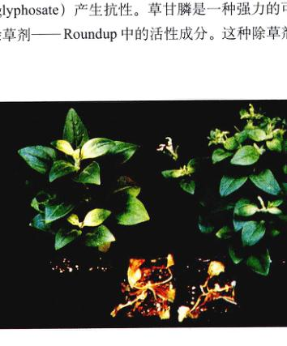
图 19.20 基因改造产生的抗除草剂能力 这 4 种矮牵牛花都被暴露在等剂量的除草剂 Roundup 中。顶上的两株被基因改造过对 Roundup 中活性物质草甘膦有抗性，而下面的两株则没有。
Page 21 / 原始页码 393
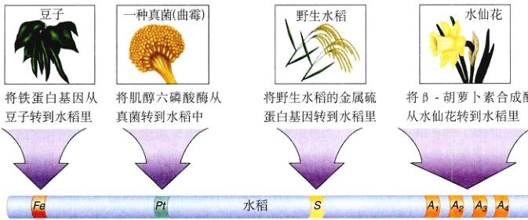
图 19.21 转基因水稻 转基因水稻是由瑞士生物工程师 Ingo Potrykus 培育出来的。预计可以改善以大米为主食的发展中国家人民的饮食。在那些地区铁和维生素 A 的缺乏是一个严重的问题。
方法是把一种基因插入到作物中，这种基因能编码对吃这些植物的昆虫有害，而对其他生物无害的蛋白质。有一种土壤细菌苏云金芽孢杆菌 (Bacillus thuringiensis) 中找到了一种杀虫蛋白，当食草昆虫摄食该蛋白时，虫子胃里的酶将它转化一种昆虫特异性毒素，并引起麻痹和死亡。因为这些酶不存在于其他动物体内，这种蛋白质对它们是无害的。通过使用 Ti 质粒，科学家们已经把编码这种蛋白的基因转化到了番茄和烟草等作物中，他们发现这些转基因 (transgenic) 植物确实对那些通常以它们为食的昆虫有抵抗力。1995 年，EPA 批准通过有关生产转基因大豆、棉花和玉米的决定。转基因土豆能够杀死一种常见的害虫——科罗拉多土豆甲虫，转基因棉花能抗棉花螟蛤、蚜虫和粉红棉铃虫；转基因的玉米对欧洲玉米钻蛀虫和其他一些蛀虫类害虫有抗性。
Monsanto 公司的科学家们最近在筛选从植物和土壤样品中提取的天然化合物时，从一种真菌中分离出了一种新的杀虫物质——胆固醇氧化酶，这种酶能破坏昆虫的肠道膜。这种称为 Bollgard 的真菌基因已经被成功地导入到许多种农作物中。它能杀死很多种昆虫，包括棉花象鼻虫和科罗拉多土豆甲虫，这两利昆虫都是危害很大的农业虫害，1996 年开始了大田实验。
有些害虫攻击植物的根，而苏云金芽孢杆菌通常被用来对付这种威胁，但是这种细菌通常不在植物根部生长，因此生物学家们把苏云金芽孢杆菌的杀虫蛋白基因引入到根部着生的细菌中，特别是假单胞菌 (Pseudomonas) 中。这种很有前途的方法已被环境保护部门批准进行大田实验。
4) 植物基因工程的应用前景
在过去 10 年里，栽种基因改造的玉米、棉花和大豆等作物在美国已经成为普遍现象。1999 年，在美国 7200 万英亩的种植大豆中，超过一半是选用基因改造对除草剂有抗性的种子，因此降低了耕作的需要，而且对土壤的侵蚀也大大减轻了。这些好处虽然很重要，但仅仅局限于农民，使他们的作物种植节约成本或提高效率。然而公众得到的食物是一样的，只是花的钱少了而已。
就像一出戏的第一幕，这些进展主要用来构建一个舞台框架，真正的表演现在才刚开始。植物基因工程的真正前景是生产出具有人们想要特征的转基因植物，直接使消费者受益。
近来高营养大米的进展向我们暗示了将要发生些什么。在发展中国家里，许多人以简单的饮食为生，这种食物的维生素和矿物质（植物学家们称之为微量营养素）含量极少。全球范围内两种主要的微量营养素缺乏表现为铁缺乏和维生素 A 缺乏，前者影响到了 14 亿女性，占全球人口的 24%，后者影响了 4000 万儿童，占全球人口的 7%。这种营养缺乏现象在以大米为主食的发展中国家里尤为严重。在最近的研究中，瑞士苏黎世植物科学研究所的生物工程师 Ingo Potrykus 和他的小组在解决这个问题方面取得了重大进展，该项工程由洛克菲勒基金会资助，其成果将免费提供给发展中国家。这是植物基因工程所能实现的一个模式。
为了解决以大米为主食的人群饮食中铁缺乏之问题，Potrykus 首先研究了为什么水稻中铁如此的匮乏。原因有 3 点：
(1) 含铁量少：大米胚乳的蛋白质中含铁量异常乎寻常的少。为了解决这一问题，将一种铁蛋白基因从大豆转化到水稻中（图 19.21）。铁蛋白是一种含铁含量超高的蛋白质，因此大大增加了水稻中的铁含量。
Page 22 / 原始页码 394
(2) 小肠对铁吸收的抑制：大米含有一种浓度异常高的化学物质叫做肌醇六磷酸，它能抑制铁在小肠里的重吸收，从而阻止机体吸收大米中的铁。为了解决这个问题，一种编码破坏肌醇六磷酸酶的基因从真菌引入到水稻中。
(3) 进行有效铁吸收所需的硫含量太少：铁的吸收需要有硫，而大米中硫的含量很少。为了解决这个问题，编码一种独特的富含硫的金属硫蛋白的基因从野生水稻引入到水稻中。
为了解决维生素 A 缺乏问题，也采用了同样的手段。首先，明确了问题所在。原来水稻只有合成 β-胡萝卜素（维生素 A 原）的途径却没有催化最后 4 步反应的酶。为了解决这个问题，编码这 4 种酶的基因从一种人们熟悉的花——水仙花中引入到水稻里。
Potrykus 在克服饮食缺陷转基因水稻方面的进展没有涉及任何诀窍，有的只是简单的生物工程技术的常识性工作。他研制出的转基因大米将直接改善几百万人的生活，他的工作代表着基因工程的真正前景——帮助人类迎接未来一千年的挑战。
直接使消费者受益的基因改造产品正在不断增加。在荷兰，生物工程师们宣布他们正对植物进行基因改造，使其成为疫苗生产工厂！他们把一种抗狗细小病毒的疫苗基因引入到矮牵牛花中，并将其置于矮牵牛花产生花蜜的基因中。药物产生在花蜜中，由蜜蜂采集，然后从蜂蜜提取出来，当然这并不是一部科幻小说。显然，植物基因工程的美好前景展现在我们面前，它并不遥远。
5) 饲养动物
编码生长激素的基因是最早被成功克隆出来的基因之一。1994年，Monsanto 公司得到了联邦许可讧，使它的重组牛生长素 (BST) 可以用作商业生产。全世界奶牛场的农场主们开始把这种激素作为添加剂加入到牛饲料中，以提高奶产量（图 19.22）。基因工程改造的生长激素还在接受测试，以探明它能否提高牛和猪的肌肉重量，以及用来治疗因垂体腺不能分泌足够生长激素而造成的侏儒症。从牛奶或肉里吸收的 BST 对人体无效，因为它是一种蛋白质，在胃里会被消化掉。然而，BST 还是在一定程度上受到了公众的抵制，这主要归因于对基因技术普遍的担心。有些人不信任用基因工程技术生产出来的牛奶，即使这些牛奶跟其他牛奶没有任何区别。在公众的理解和接受方面出现的问题并不是很奇怪，毕竟基因技术给我们的生活造成了前所未有的重大影响。
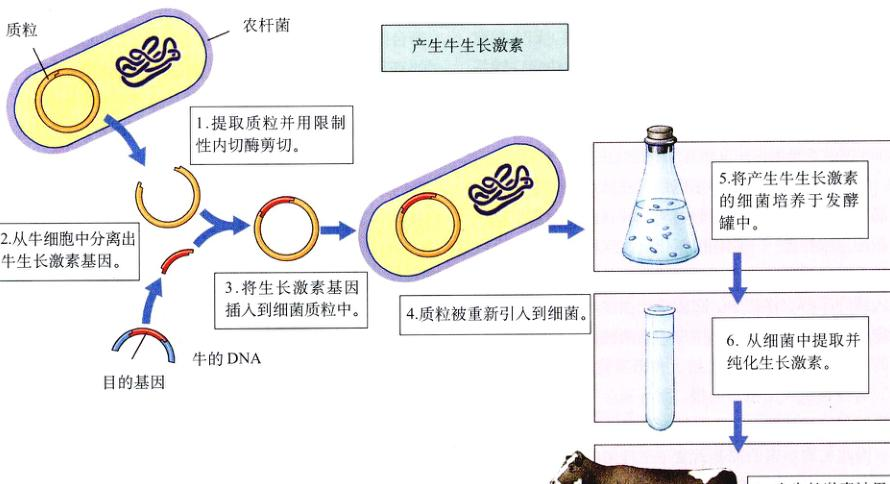
图 19.22 利用基因工程生产牛生长激素 (BST) 尽管 BST 有效，无害，而且得到了 FDA 的认可，但围绕它的存在是否必要仍有很多争议。
Page 23 / 原始页码 395
19.3.5 克隆
用转基因动物改良家畜所遇到的困难是如何得到足够数量的动物。杂交育种只能缓慢的产生后代，而重组为基因工程付出了这辛苦的工作。从理论上，人们希望能把转基因品种“复印”出许多一模一样的拷贝来，然而直到 1997 年以前，还普遍认为成体动物不能被克隆。现在农业基因工程师们似乎手可得。1997 年，科学家们宣布，从分化的脊椎动物组织成功地获得了一个克隆，从一只成体羊身上取下的一个细胞长成了一只羊。这个令人惊讶的结果预示着农业科学的革命。
1) Spemann “异想天开的实验”
克隆动物的想法最早于 1938 年由德国胚胎学家 Hans Spemann (他被称为“现代胚胎学之父”) 提出，他称之为“异想天开的实验”：从一个卵细胞中取出细胞核，代之以另一个细胞的细胞核。
直到 14 年后，技术才发展到足以让人们迎接 Spemann 的挑战。1952 年，两位美国科学家 (Robert Briggs 和 T.J.King) 用非常细的吸管从青蛙的卵细胞中吸出细胞核（青蛙的卵细胞出奇的大，这使实验容易一些），再把从一只成体青蛙细胞中取出来的细胞核转移到里面。然而后续实验没有成功，直到 18 年后英国发育生物学家 John Gurdon 取得了部分成功，他在 1970 年把从发育后期的青蛙胚胎中而不是成体组织中得到的细胞核插入到卵细胞中，结果青蛙卵细胞发育成蝌蚪，只是蝌蚪在长成成体之前就死亡了。
2) 成功之路
整整 14 年里，人们尝试了大量的细胞核移植试验但都未成功。然而科技一直向前发展。最后到了 1984 年，在德克萨斯州工作的丹麦胚胎学家 Steen Willadsen，成功的用从早期胚胎细胞中提取出的细胞核克隆了一只羊。这个令人兴奋的结果不久在许多其他生物身上得到重复，包括牛、猪和猴。
然而，似乎只有早期胚胎细胞才能起作用。研究人员开始确信动物胚胎细胞在最初几次细胞分裂后就被不可逆转地“束缚”起来，然后，分化了的动物细胞的细胞核就不能被用来克隆完整的生物体了。
如今我们知道了这个结论是没有根据的。苏格兰遗传学家 Keith Campbell 是研究农业动物细胞周期方面的专家，为解决这个难题做出了重大的贡献。到 20 世纪 90 年代初期，癌症研究而获得的有关细胞周期控制的知识，使人们认识到细胞在不适宜的条件下不会分裂。就像一台洗衣机在开始甩干步骤前必须先检查水是否排净一样，细胞在开始分裂前也要检查是否具备所需要的一切条件。Campbell 推断：“可能卵细胞和供体细胞核需要在细胞周期的同一个阶段。”
现已证明这是一个很重要的观察结果。1994 年一个叫 Neil 的研究者首先成功的用成熟胚胎克隆出了动物，随后在 1995 年 Campbell 和生殖生物学家 Ian Wilmut 合作也获得了成功。他们先使细胞处于饥饿状态，使细胞暂停在细胞周期的 G1 检验点。因此，两个处于饥饿状态的细胞在细胞周期的同一点获得同步。
3) Wilmut 的羊羔
随后 Wilmut 开始尝试一个重大的突破，一个自 Spemann 在 59 年前提出的后研究者们一直没有取得成功的实验：把成体分化细胞的细胞核转移到一个去核的卵细胞中，把获得的胚胎在一个“代理母亲”体内生长发育，希望由此得到一只健康的动物。
Wilmut 从一只 6 岁前的羊乳腺取了一些乳腺细胞（图 19.23）。根据这些细胞的来源，就以乡村歌手多莉帕顿 (Dolly Parton) 的名字命名此克隆为“多莉 (Dolly)”，这些细胞在组织培养基里生长，还有一些被冷冻起来，这样将来就可以用基因指纹技术来证明克隆羊确实和那只 6 岁大的羊在遗传上是一模一样的。
在克隆的准备过程中，Wilmut 小组把绵羊乳腺细胞赖以生存的血液浓度降低并维持 5 天。在与之同时进行的准备活动中，从一只母羊身上取出来的卵细胞被摘除细胞核。每一个卵细胞的核都被小心地用微吸管吸取出来。
1996 年 1 月，Wilmut 通过手术使乳腺细胞和卵细胞融合，乳腺细胞被插入到卵细胞外的包被物中。然后 Wilmut 对其加了一个短暂的电刺激，这是一个诀窍，它使两个细胞的质膜出现裂隙，所以乳腺细胞的内容物就能进入卵细胞。电刺激还启动了细胞周期，引起细胞分裂。
Page 24 / 原始页码 396
6 天后，277 个实验品中有 30 个，其分裂胚胎达到空心球“囊胚”阶段，而且其中的 29 个被移植到了代孕母亲的绵羊体内。5 个多月后，即 1997 年的 7 月 5 日，有一只代孕母羊产下了一只羊羔，这只羊羔就是“多莉” (Dolly)。这是第一个从分化的动物细胞中获得的成功克隆。
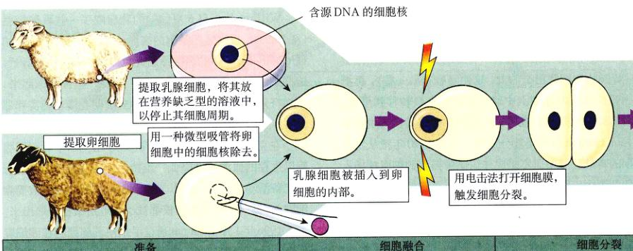
图 19.23 Wilmut 的动物克隆实验 Wilmut 将一个乳腺细胞的细胞核与一个去除了细胞核的卵细胞融合，成功地克隆了一只羊。
4) 克隆技术的未来
Wilmut 对完全分化了的绵羊细胞的成功克隆，是基因技术史上的一个里程碑式的事件。尽管他的做法效率很低（277 个实验样本中只有一个成功），但它确定无疑地证明了一点：成体动物细胞进行克隆是可行的。在以后的 4 年里，研究者们大大提高了克隆的功率。他们都把握住了 Wilmut 实验的中心思想——克隆静止期的细胞，研究人员又回到了由 Briggs 和 King 率先尝试的核移植技术中去。这种方法效果很好，现在已经成功地克隆出多种哺乳动物，包括小鼠、猪和牛。
可以预测，转基因克隆对医药行业和农业一样有着重大的影响。携带人类基因的动物可以被用来生产稀有的激素。比如，最近有一只转基因改造的绵羊，能在奶中分泌一种 α-1 抗胰蛋白酶（在缓解囊肿性纤维化的症状上有很大帮助），如果将这种羊克隆，将大大降低生产这种昂贵药品的成本。
不能不推测克隆人的可能性。没有理由认为这种实验不可能成功，然而有许许多理由质疑这种实验是否应该做。因为大多数西方的观念是建立在个人个性的基础上，可以预料，克隆人将引发重大的争议。
19.3.6 干细胞
自从 1998 年分离出了胚胎干细胞以来，全世界的实验室都在探索干细胞修复损伤或死去组织的可能性。
什么是干细胞？在人类生命的开始，精子使卵子受精而形成一个注定要发育为个体的单个细胞。当发育开始时，这个细胞开始分裂，产生少数细胞的细胞团。在这个非常早期的时刻，每一个细胞都是一模一样的，都称其为胚胎干细胞。它们中的每一个都能独自发育成一个健康的个体，例如在牛的育种过程中，育种家可以经常分离这些细胞，用来生产珍贵后代的多个克隆。
这些胚胎干细胞令人兴奋的前景在于，它们能发育威任何组织，比如可以用来修复受损的心脏或脊骨组织（图 19.24）。在小鼠身上的实验已经取得了成功，由胚胎干细胞长成的心肌细胞，能与一只活体小鼠的心脏组织整合在一起，这表明，心脏病患者的受损心肌可以用干细胞来修复，受伤的脊髓也可以修复。人们正在积极从事这种大有前途的治疗，然而，这些实验是有争议的，由于胚胎干细胞通常是从被丢弃或流产的胚胎组织中分离出来的，这引发了严重的伦理问题。
Page 25 / 原始页码 397
1) 组织特异性干细胞
新的实验结果表明，有一种巧妙的方法可以避开胚胎干细胞所造成的伦理纠纷。让我们先回到人体是如何发育的话题。胚胎干细胞以后发生了什么变化？它们开始选择不同的发育途径，比如有些决定形成神经组织的细胞，一旦这个发育方向确定下来，它们就不能分化为其他种类的细胞了，这些注定要发育为神经组织的细胞称为神经干细胞。其他还有一些注定分化为血液细胞，还有一些将发育成肌肉，每一种主要的组织都有它们自己的组织特异性干细胞。这就是关键所在：随着发育的进行，这些组织特异性干细胞始终存在，甚至在成人体内也同样存在。那么为何不用这些成体细胞来代替胚胎干细胞呢？
2) 移植组织特异性干细胞治愈患多发性硬化的小鼠
1999 年，在哈佛医学院 Evan Snyder 博士的一个开创性实验中，组织特异性干细胞被证明能够修复死亡的脑组织。他和他的同事们把神经细胞（胚胎干细胞的直系后代，能够发育成任何类型的神经细胞）注射进一只刚出生的小鼠脑内，这只小鼠患有一种类似于多发性硬化 (MS) 的疾病，缺乏一种保持在信号传导神经外鞘绝缘层的细胞。注射进去的干细胞在整个脑子里四处迁移，并能够把自身转化为缺少的那一类细胞。这些新生细胞通过取代缺失了绝缘层的信号传导神经细胞修复疾病造成的损伤，许多接受了治疗的小鼠完全康复了。至少对于小鼠来说，组织特异性干细胞提供了一种多发性硬化的治疗方法。
这种方法似乎很简单，而且该对人也适用。实际上，血液干细胞已经很普遍地用于补充癌症患者的骨髓，这些患者接受过破坏骨髓的疗法。然而把使用范围扩大到其他种类组织特异性干细胞的问题在于，要想找到你所需要的那种组织特异性干细胞并不是那么容易。
3) 移植的干细胞使小鼠幼体糖尿病迎来转机
2000 年，佛罗里达大学 Ammon Peck 博士和他的研究小组针对 I 型糖尿病或青少年型糖尿病，一个特别令人烦恼的问题，进行了一些有希望的实验。患有 I 型糖尿病的人，由于他们的免疫系统错误地攻击产胰岛素的胰腺细胞为目标并毁坏它们，因此患者缺乏产生胰岛素的胰腺细胞。它们不再能产生足够的胰岛素来控制血糖水平，必须每天吸收外源胰岛素。人们曾多次尝试重新增加新的产生胰岛素的细胞（胰岛细胞），但是效果都不好，因为免疫细胞持续地破坏它们。
Peck 和他的小组认为，为何不加入能产生胰岛细胞的干细胞呢？它们可以持续产生新的胰岛细胞，取代那些受到免疫攻击击的细胞。由于总是有能产生胰岛素的细胞存在，糖尿病就能被治愈。
没人知道这种干细胞是什么样子，但研究人员知道，它们来自胰腺导管的上皮细胞。一定有一些还潜伏在那里没有被发现，因此研究小组从小鼠身上取出了一些这种上皮细胞，并把它们放到组织培养基中培养，直到得到足够多的这种细胞。
他们要找的干细胞是否存在于他们准备的细胞培养基中呢？是的。在实验室培养细胞的培养皿里，在有糖的情况下有胰岛素生成，这表明胰岛细胞在培养基中已经生成，这些胰岛细胞一定是由干细胞产生的。
现在开始用它治疗 I 型糖尿病。科学家们把他们的细胞培养基注射到通过特殊育种而患有 I 型糖尿病的小鼠胰腺里。由于没有胰岛细胞合成胰岛素，这些糖尿病的小鼠每天不饲喂胰岛素就不能存活。结果怎么样呢？糖尿病被治愈了！小鼠不再需要喂食胰岛素了。
急于对发生情况进行更细致的观察，研究人员解剖了小鼠，检查它们的胰腺细胞，发现小鼠似乎有着完全正常的胰岛细胞。
人们可能会希望研究人员在结束实验前再多等一会儿，还不清楚这种治疗到底暂时的还是长期的。尽管如此，注射成体干细胞能治疗 I 型糖尿病这个结论是无疑的。
虽然结果令人振奋，但小鼠并不是人，也不能保证这种方法在人身上一定有效。但有很多理由证明，它确实可能适用于人类，目前该实验正在人身上重复进行。患有 I 型糖尿病的患者接受受人类胰腺管细胞注射治疗，这些细胞来自于已死亡的把器官捐出来供科研使用的人。使用成年器官捐赠者的细胞没有引起伦理方面的争论，而且初期的结果似乎令人鼓舞。
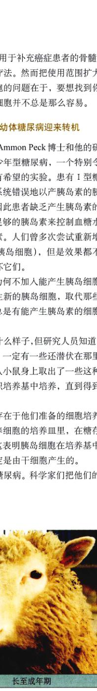
Page 26 / 原始页码 398
19.3.7 道德规范
基因工程带来的益处正在彻底改变我们的生活。但什么是基因工程的缺点，潜在的代价和危险又是什么呢？许多有影响的活动家和科学社团的成员，都表示了这样的关注：基因工程师们正在通过篡改遗传物质“扮演上帝”。比如，如果对一个癌细胞的 DNA 进行剪切，然后将片段随机地插入载体中在细菌中繁殖，将会发生什么事情？难道不可能出现这样的危险：有一些细菌将获得一种传染性的癌症吗？植物或动物进行基因改良后的产品在几代以后会不会变得对消费者有危险？“改良”作物对生态系统统可能有哪些不可预见的影响？创造出“天生优等”的生物（包括人类）是否道德？
1) 我们要怎样衡量基因改良作物的潜在危险
基因工程的美好前景是显而易见的，然而正是这个基因工程造成了研究者和反对者之间的直接冲突。1999 年 6 月，英国的抗议者们袭击了一个基因改良 (genetically modified, GM) 甜菜的试验区，接下来，8月他们破坏了一块基因改良 canola (用来榨油和作动物饲料) 的试验田。再没有比这更显著的反差了：一方面美国接受了基因改良作物，另一方面欧洲人却不信任这种作物。这场争论引发的强烈情绪指向有必要弄清楚该如何衡量与基因改良植物相关联的危险。
两种危险必须考虑：第一是食用基因改良食物的危险；第二是潜在的生态效应。
2) 食用基因改良的食品有危险吗
反对者们担心，基因改良过的食物可能变得有某种危险性。要对此进行确认，有必要记住这一点：生物工程师们沿两个十分不同的方向改良作物。一类基因改良使作物更容易生长，第二类改良则是为了改良食品本身。
在欧洲引人的抗 Roundup 除草剂的豌豆是第一类改良的一个模型。这种改良很受美国农场主的欢迎，在 1999 年他们的种植计划中有一半是这种豌豆。他们喜欢这种基因改良的豌豆，是因为要通过大量强度的耕作就可以栽培（杂草被 Roundup 除草剂杀死了），这样既省钱又减轻了对土壤的侵蚀。这种豌豆在营养上是否有什么不同呢？没有。豌豆中的 Roundup 抗性基因是通保护植物生成所谓芳香氨基酸的能力来实现它的作用。与之相反，对于得不到保护的杂草，Roundup 阻碍了这一生成途径，从而杀死杂草。由于人类根本不能自己合成任何芳香氨基酸（我们从食物中得到它们），Roundup 并不能伤害到我们。我们食用的这种基因改良豌豆在营养方面和没改良的豌豆一样，并且生产起来更便宜。
在第二类改良中，某个基因被加到植物中，以改善食品的营养特性，这种食物在营养上是不同的。对于这种实例中的每一个都有必要检验消费者是否可能对引入基因的产物产生过敏反应。在一个实例中，比如，把促蛋氨酸基因从巴西果仁中引入到豌豆里（豌豆缺乏这种氨基酸）的做法就被终止了，因为 8 个对巴西果仁已过敏的人中有 6 人对基因改良的豌豆产生了抗体，这表明了适应反应的可能性。取而代之的是用向日葵的基因来使基因改良作物中的氨基酸水平提高。目前用过敏反应来筛选转基因食品是很常见的。
对于这两类途径，生物工程给食品供应带来的危险似乎都非常微小。迄今为止基因改良食品似乎是完全安全的。
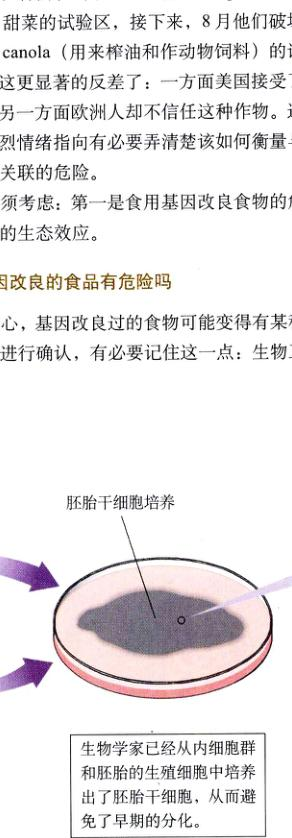
图 19.24 利用胚胎干细胞恢复损伤的组织 (左) 一旦精卵细胞结合，细胞分裂就会产生胚泡，胚泡内的内细胞群则发育成人的胚胎。 (右) 生物学家已经从内细胞群和胚胎的生殖细胞中培养出了胚胎干细胞，从而避免了早期的分化。
Page 27 / 原始页码 399
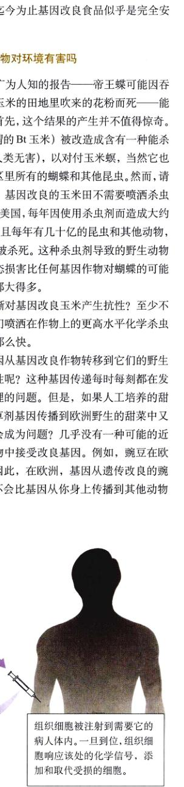
（接上图）干细胞生长，产生出病人所需要的任何组织。组织细胞被注射到需要的病人体内。一旦到位，组织细胞响应该处的化学信号，添加和取代受损的细胞。
为用于治疗，可以对胚胎干细胞进行基因工程加工，以适应病人的免疫系统：干细胞的自我识别基因被病人的自我识别基因所取代。
3) 基因改良作物对环境有害吗
我们通过这份广为人知的报告——帝王蝶可能因食从种有基因改良玉米的田地里吹来的花粉而死——能得到些什么想法？首先，这个结果的产生并不值得惊奇。基因改良玉米（所谓的 Bt 玉米）被改造成含有一种杀死昆虫的毒素（对人类无害），以对付玉米螟，当然它也将杀死田地邻近地区里所有的蝴蝶和其他昆虫。然而，请注意这样一个事实：基因改良的玉米不需要喷洒杀虫剂来控制玉米螟。在美国，每年因使用杀虫剂而造成大约 90 亿美元的损失，而且每年有几十亿的昆虫和其他动物，包括大约 6700 只鸟被杀死。这种杀虫剂导致的野生动物被杀害所产生的生态损害比任何基因作物对蝴蝶产生的影响所产生的损害都大得多。
昆虫会不会逐渐对基因改良玉米产生抗性？至少不像它们现在对我们喷洒在作物上的更高水平化学杀虫剂产生抗性的速度那么快。
关于引入的基因从基因改良作物转移到它们的野生近亲或杂草的可能性呢？这种基因因时时刻刻都在发生，因此这是一个合理的问题。但是，如果是人类培养的甜菜中抗 Roundup 除草剂基因传播到欧洲野生的甜菜中又会怎样？为什么会成为威胁？几乎没有任何一种的近亲会从基因改良作物中接受改良基因。例如，豌豆在欧洲没有野生近亲。因此，在欧洲，基因从基因改良的豌豆中脱离的概率，不会比基因从你身上传播到其他动物身上的概率更高。那么，不管在哪一个方向上，生物工程对环境的危险似乎都很微小。实际上，在某些情况下它还减轻了由耕作和除草剂对环境造成的严重损害。
4) 我们是否应该给基因改良的食物做标记
尽管作物的基因改良似乎只有很少一点切实的危险性，但必须向公众保证这些危险得到了充分的考虑，这一点是很重要的。在关于植物基因改良的讨论中，很少有哪个话题能比是否对基因改良作物做标记这个话题讨论的更热烈。农场主们争辩说既然没有什么显著的危险，那么一个基因改良标记只起到了把胆小顾客吓跑的作用而已。而消费者群体信们则回应说消费者有权做出这个决定，而且有权知道做决定所必需的信息。
在考虑这个问题时，有必要分清两个不同的概念：标记的必要性和公众要求要标记的权利。每一项严肃的科学研究都表明，基因改良食物是安全的——实际上，对于豌豆和其他一些经改良而更易于种植的作物来说，食物本身没有任何可见观测到的变化，也没有哪一种营养测试能把它们和未经改良的品种相区别。因此，给基因改良食物加上一个基因改良标记似乎并没有多少意义。
公众有权知道他们在吃什么，这是另一个问题。在欧洲对基因操作有一种普遍的恐惧，因为它是陌生的。与我们不同，那里的人不相信他们的管理部门，因为他们那里的管理部门过去在保障群众利益方面做得不好，名声很差。所以当他们看到基因改良食物时，就想到了管理部门过去的名称。在英格兰，人们会记得英国管理部门没能保护消费者免受染有疯牛病的肉的侵害。
总之，对一个恐惧的公众说“没有理由害怕，没有任何资料显示基因改良作物有害”，这是没用的。一个欧洲的消费者会简单地回答害处只是还没有发现而已，我们的知识还不足以看到所有潜伏在角落里的危险。“慢慢来”，欧洲的消费者会说，“给研究者一个检查所有角落的机会，要做到确定无疑。”没人能说小心谨慎不好，但很难想象研究者们还能发现什么，因为安全性问题已经被很充分地考虑到了。然而担心仍旧延续，只是因为再多的信息也无法打消它。就像一个害怕床底下有鬼的小孩，他朝床下看了一眼，但还是不能入睡，可能下次鬼就会在那里出现。这意味着我们必须得有基因改良标记，因为人们有权利知道他们担心的事情。
Page 28 / 原始页码 400

图 19.E 加尔文 (Calvin) 与霍布斯 (Hobbes)
这些标记将是什么样子？一个只写着 “GM FOOD” 的标记就像是个商标，像毒药标签一样，警告大家可能存在的危险。何不在标签上向消费者们提供信息，告诉他们为何要对这种农产品知道些什么。
Bt 玉米：由于在植物中引入了抗昆虫的基因，从而减少了杀虫剂的使用，这种作物的生产效率更高。
耐 Roundup 除草剂的豌豆：作物中引入基因使之对除草剂有抗性，通过降低除草操作的需要量而减轻了对土壤的侵蚀。
富含 β-胡萝卜素的大米：引入基因后提高了食物中的 β-胡萝卜素的含量，可以抵御维生素 A 缺乏症。
每一个基因改良食品的标签实际上都在告诉消费者我们为基因改造的作物所做的一切工作，距离促进公众对基因技术接受的目标还有很长的路要走。
有关基因工程的一幅幽默漫画或许可以帮助同学们解除学习这一部分内容的困乏 (图 19.E)。
Page 29 / 原始页码 401
小 结
19.1 操纵 DNA 的能力产生了一门全新的遗传学
- 基因工程涉及特定基因的分离以及将其转入到新的基因组中。
- 基因工程技术一个重要的组成是一类称为限制性内切酶的特殊酶，它们能将 DNA 切成片段。
- 1973 年，当 Cohen 和 Boyer 将青蛙的染色体 RNA 插入到细菌质粒中之后，第一次完成了这样的重组 DNA。
19.2 基因工程的操作步骤简单易懂
- 基因工程实验包括 4 个步骤：DNA 提取、重组 DNA 构建、克隆和目的基因筛选。
- 通过设计目的克隆对抗生素的抗性完成初步筛选。然后再利用杂交的方法鉴别目的基因。
- 基因技术包括 PCR、Southern blotting 和 RFLP 分析。
19.3 生物技术正引起一场科学变革
- 对人类基因组的广泛研究，已经产生了关于基因定位及人类基因组和其他生物基因组比较方面的重要信息。
- 生物芯片，也叫基因微矩阵，将拓宽 DNA 的分析。
- 基因拼接在作为临床工具上有很大的可行性，尤其是将生物疫苗用于疾病预防上。
- 基因工程应用的一个焦点在农业，用于抵抗病虫害的基因已经运用到农作物。
- 最近的实验已经开启了克隆一般动物的大路，意味着克隆人已成为可能。
- 在过去的 10 年中，基因工程对人类社会产生了巨大的影响，带来了许多有益的变革，但同时也引发了有关道德和伦理方面的激烈争执。
媒体资源
- DNA 重组技术
- 科学家如何思考：第一个遗传工程生物 (Luria/Delbruck)
- PCR 反应
- “科学”专栏：基因工程是如何操作的 - 改变 ANDi；基因工程向人类又靠近了一步。
- 探索：来自真实案例的 DNA
- “科学”专栏 - 谁应该拥有基因的秘密？ - 植物基因工程的真正承诺 - 探测木薯的天然近亲 - 克隆应该有权吗？ - 中断终止子 - 生物芯片与个人隐私
- 技能测验 - 牛生长激素 - 克隆实验